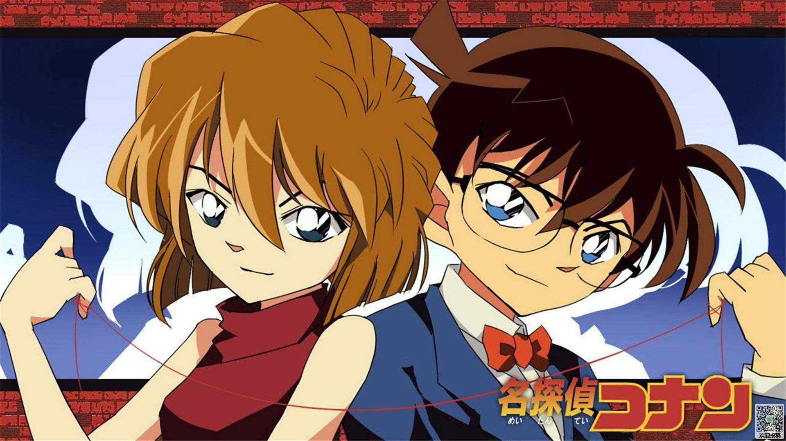
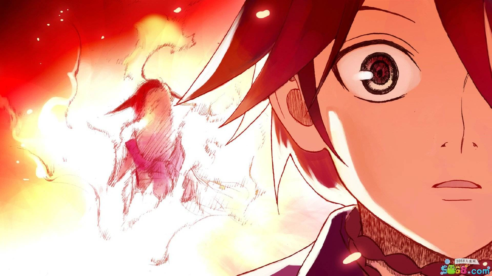
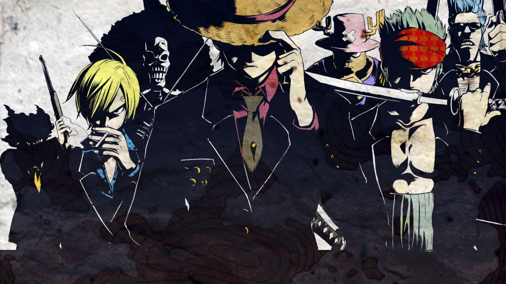
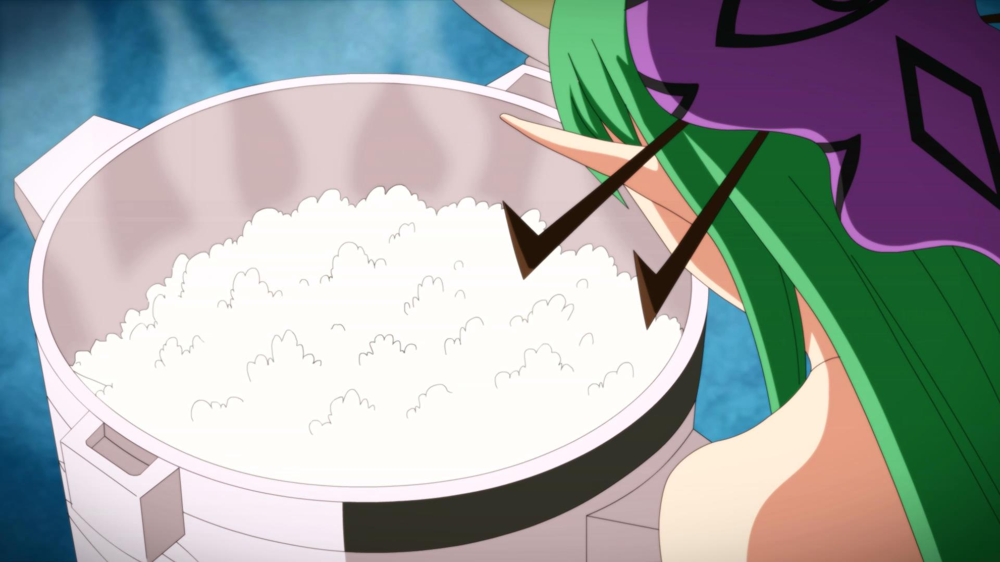

名侦探柯南
高中生侦探工藤新一，被称为“日本警察的救世主”、“平成年代的福尔摩斯”。一次在与青梅竹马的女友毛利兰去游乐园游玩时，发现两个行动诡异的黑衣人。新一跟踪他们直到交易现场，另一个黑衣人趁其不注意从后面将他...


海贼王
拥有财富、名声、权力，这世界上的一切的男人 “海贼王”哥尔·D·罗杰，在被行刑受死之前说了一句话，让全世界的人都涌向了大海。“想要我的宝藏吗？如果想要的话，那就到海上去找吧，我全部都放在那里。”，世界开始迎接“大海贼时代”的来临

十万个冷笑话
该动画由一系列吐槽短篇组成，短篇之间目前看似没关系，但关系又非常微妙，语言也十分符合网民需求，被誉为“中国版的日和”。目前已连载的篇章有葫芦娃篇、世界末日篇、哪吒篇、光之国篇，以及一系列杂篇有见鬼篇、亚基篇、柯哔篇等。

犬夜叉
该故事背景设置在日本战国时代，主要讲述的是初三女生日暮戈薇偶然通过自家神社的食骨之井穿越时空来到500年前的日本战国时代妖怪与人的混血半妖——犬夜叉，为寻找散落于各处的四魂之玉碎片而展开的冒险之旅。